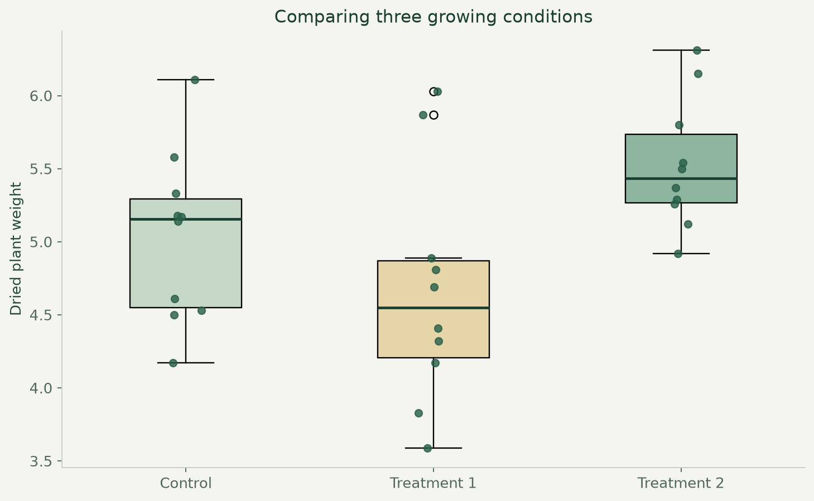
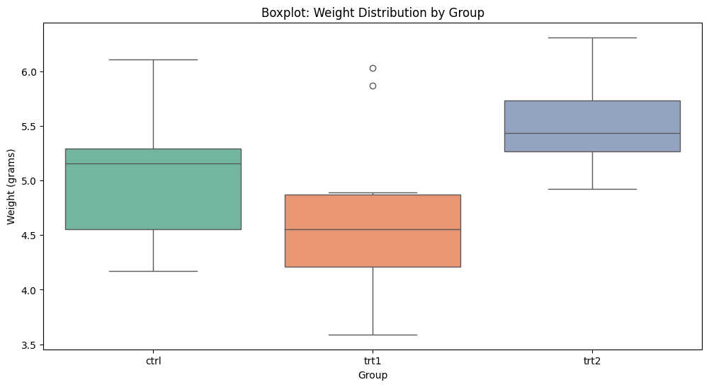

Plant growth & statistics.
Compare plant-growth treatments using visual exploration and statistical inference.

What I built
Analysed the PlantGrowth teaching dataset using distribution plots, assumption checks, group comparisons and follow-up tests.
Why it matters
Differences in averages can be misleading without considering variability. This project shows how visual evidence and statistical testing support a careful comparison.
How it works
- 01
Inspect 30 observations across a control and two treatment groups.
- 02
Explore distributions and check normality and variance assumptions.
- 03
Compare groups with t-tests, ANOVA, Tukey HSD and a non-parametric alternative.
What it demonstrates
Statistical reasoning, hypothesis testing, visual communication and explaining uncertainty around a decision.
Evidence, with context.
The project notebook executed all 18 code cells. The portfolio pairs a new chart of the source data with an original saved coursework plot.


Scope and limitations
Small teaching dataset. Statistical significance alone does not establish practical importance or justify generalizing beyond the experiment. Independence depends on study design and cannot be proven by a plot.
Visual provenance and source attribution are recorded in the evidence register ↗.
Under the surface.
Architecture, methods and improvements
The source notebook includes Shapiro-Wilk checks, Q-Q plots, Levene’s test, one-way ANOVA, Tukey HSD and Kruskal-Wallis. Original references and methodology remain available alongside the code.
Try it locally
Install requirements.txt and Jupyter. Open project.ipynb from the repository root with PlantGrowth.csv alongside it.
The portfolio is a static GitHub Pages site. Server applications run locally; the portfolio does not collect bookings, credentials or payments.